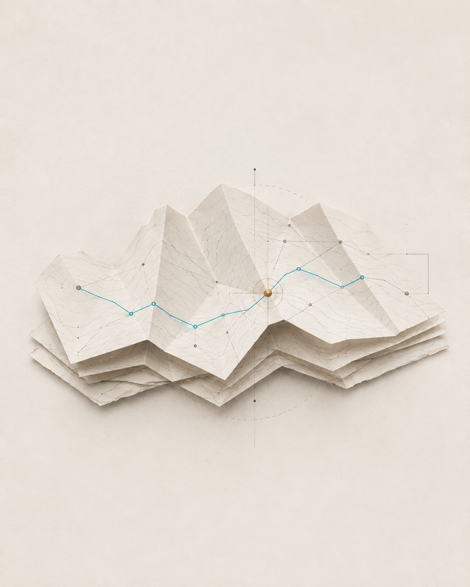

Archify
Contributor field notePR {{NUMBER}}
@{{AUTHOR}}
System cartographer
The map
changed here.
You made the system easier to see.
This revision is now part of Archify.
github.com/{{REPOSITORY}}{{SHORT_SHA}}